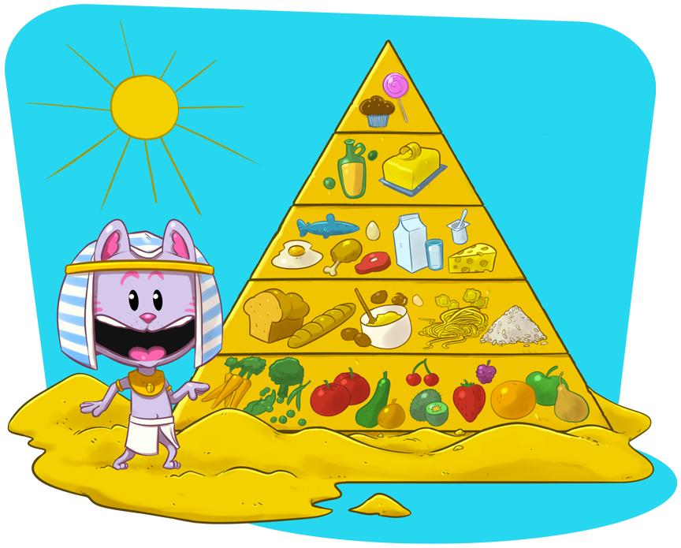

L’eau est la boisson du bonheur !
L’eau est la seule boisson indispensable à ton organisme et tu peux en boire à volonté.
Selon ton âge, il faut boire entre 1 litre et 1,5 litre par jour, c'est-à-dire un petit verre d’eau toutes les heures. Pour quelle raison ? Parce que ton corps perd naturellement de l’eau tout au long de la journée avec la respiration, la transpiration et la digestion.
Par ailleurs, l’idéal est de limiter la consommation de boissons sucrées, comme les sodas et les jus de fruits, à un demi-verre (125 ml) par jour : n’oublie pas qu’il faut faire le plein d’eau, pas le plein de sucre !
On ne t’a jamais dit que tu es une véritable piscine ambulante ? Et pourtant, c’est la vérité ! Car ton corps est composé d’eau à 70% : par exemple, si tu pèses 30 kilos, il y a au moins 20 kilos d’eau dans ton corps !
Mais où se cache toute cette eau ? L’eau est présente dans chaque cellule de ton corps, y compris dans ton cerveau, ton cœur et tes muscles !
Les égyptiens avaient tout compris bien longtemps avant nous, parce que la clé d’une bonne alimentation, c’est une vraie pyramide alimentaire !
Les produits sucrés (sodas, jus, bonbons, chocolat) sont à consommer avec modération, car ils sont généralement très caloriques, peu vitaminés et peu rassasiants. Petit conseil : évite tout produit sucré avant les repas, sinon ça va te couper l’appétit !
Les matières grasses (huile, beurre, pâtisseries notamment) sont à consommer avec modération afin de garder la forme. Il faut te faire plaisir mais ne pas exagérer, notamment à l’heure du goûter !
Les viandes, poissons et œufs t’apporteront toute la force des protéines animales et t’aideront à te muscler et à grandir. L’idéal est de les consommer 1 à 2 fois par jour.
Les fruits et légumes sont nos meilleurs alliés : pomme, courgette, banane, tomate, fraise, aubergine… mange ce que tu aimes, mais dévore au moins 5 portions de fruits et de légumes tous les jours !
Les féculents constituent la base de tous les repas : les produits céréaliers (pain, pâtes, riz, maïs), les légumineuses (haricots, pois, fèves, lentilles) et les pommes de terre te donneront l’énergie dont tu as besoin pour t’éclater !
Les produits laitiers, comme le lait, le yaourt ou encore le fromage, sont indispensables pour apporter du calcium à tes os et tes dents : sais-tu que le calcium représente 2 % de ton poids corporel ? Si tu pèses 50 kilos, il y a 1 kilo de calcium dans ton corps !
L’exercice physique est indispensable pour garder le sourire ! Il faut 1 heure de sport et de jeux en plein en air tous les jours pour te dépenser et garder la pêche.
L’idéal est surtout de bien t’amuser à l’école pendant la récréation, de profiter des parcs et des jardins publics pour courir et faire des jeux que tu ne peux pas forcément réaliser à la maison.
Par exemple, tu peux aussi choisir de marcher entre l’école et chez toi au lieu de prendre la trottinette, la voiture ou le bus. Et bien sûr, tu peux pratiquer des sports d’équipe ou des sports individuels, comme notre joyeuse bande d’AQUAKID.
Attention aux télévisions, ordinateurs, tablettes, smartphones et jeux vidéos, qui ont tendance à te clouer sur une chaise ou sur un canapé ! Il ne faut pas en abuser… même si c’est pour regarder le site internet d’AQUAKID !
Tous ces conseils sont conformes aux recommandations du PNNS (Plan National Nutrition Santé).